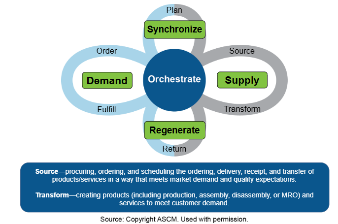
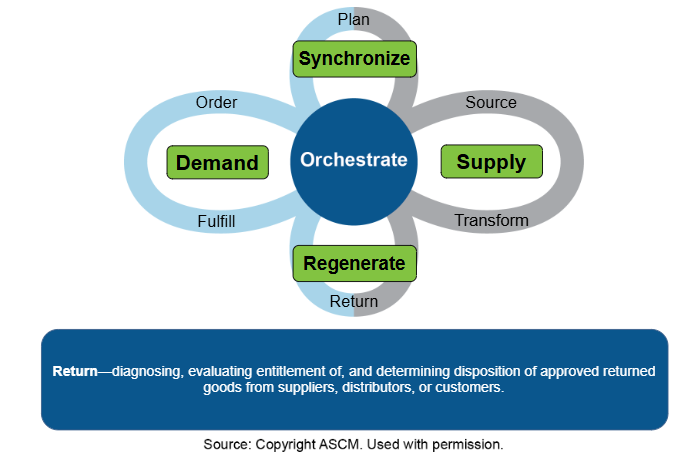
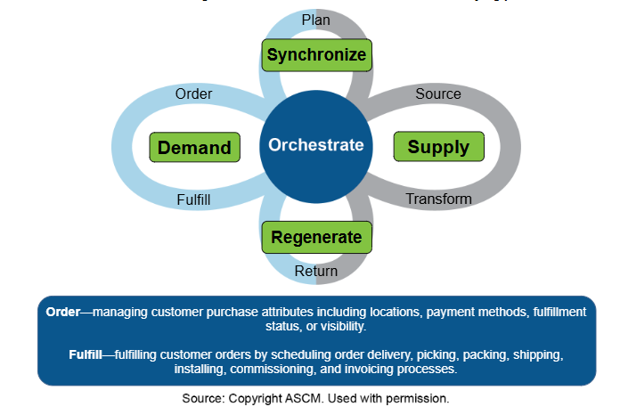

Sourcing requirements, including delivery timing requirements, can differ widely among different types of products and services, so it is important to arrive at these decisions as soon as the decision has been made to contract out the good or service. A more detailed total cost analysis may also be needed once potential sources are being considered and more costs can be known.
Once the organization has recognized the need for selecting one or more new suppliers through processes such as a make-versus-buy analysis, the next step is to determine sourcing requirements, including the necessary timing. Sourcing and timing requirements are not homogeneous. Determining sourcing and timing requirements and priorities often requires a detailed analysis. Evaluations should result in decisions for each category of requirement. Categories may include
Delivery performance (due date promises and scheduling, delivery window size, acceptability of early or late deliveries, how to measure, and penalties for failures)
Lead time (slow and cheap to fast and expensive)
Time to market (in weeks or months, plus ability to improve this duration)
Sustainability.
For example, a clothing staple item may have requirements for quality that ensure that the item is durable enough but also low enough in cost to enable low prices. Delivery performance may need to be average. Lead times can be long. The supplier may need to provide high capacity for large bulk orders but may not need to collaborate much except for providing cost-cutting suggestions. Time to market may be a low priority unless there are pending shortages. Sustainability depends on the organization's values. The top priority is low enough cost to maintain an acceptable profit margin.
Once a set of sourcing requirements is determined, a sourcing search can begin. The intensity of this search depends on the strategic importance or technical complexity of these sourcing requirements plus the relative capabilities of existing suppliers, according to Monczka, et al., in Purchasing and Supply Chain Management.Exhibit 3-4 shows this relationship.

📖 ASCM Definition — term:
Two other inventory-related cost category terms are purchase price/production cost and landed cost. Exhibit 3-5 shows how these terms relate to one another.

The purchase price or acquisition cost is the price per unit of materials acquired from suppliers. Production cost is the cost per unit of direct materials, direct labor, and factory overhead (cost of goods sold) that is applied to products produced by the organization. According to the ASCM Supply Chain Dictionary,landed cost "includes the product cost plus the costs of logistics, such as warehousing, transportation, and handling fees."
The total cost of ownership includes all of the above costs, plus it considers all other lifetime ownership costs such as durability, ongoing maintenance costs, and responsible disposal.
The intent of TCO is to get decision makers in the supply chain to see supply chain activities as an investment in capabilities rather than just an expense to be minimized. TCO is primarily a strategic rather than tactical measurement tool, meaning that it is used to select between supply chain strategy options. Once a strategy has been selected, TCO can be used for performance measurement to assess how well the strategy is contributing to organizational strategy and as a high-level control over the end-to-end supply chain process. TCO may change over time and should be periodically reassessed. For example, labor costs in developing countries may increase over time relative to other countries and the lowest cost solution may change accordingly.
TCO compares the differences between incremental (or marginal) costs of alternative supply chain solutions. An incremental cost is the cost associated with producing one additional unit of a product or service. Some costs remain relatively stable until they go above or below a certain level of capacity, at which point they step up or down in incremental cost. Measuring incremental costs considers the effects of system constraints on proposed solutions.
A supply chain is a complex system with multiple costs. Effective analysis requires selecting only those costs that help differentiate between alternative strategies. Costs that are the same for each option are omitted from consideration. Being consistent in the choice of costs to include allows comparison of multiperiod measurements or competing alternatives.
TCO considers both tangible and intangible costs. Tangible costs can be given a value using objective measures such as market value; intangible costs are difficult to measure in financial terms yet may have a real impact, especially in the long term. Examples of intangible costs include customer satisfaction, employee morale, quality, risks (e.g., outsourcing partner failure to meet obligations), or loss of intellectual capital. Such costs may be estimated and included in TCO, but the estimates should be conservative or based on a formula so they are less likely to be rejected by decision makers.
Dividing costs into landed costs, process change costs, and ongoing costs can help determine what costs to include in an analysis and what costs to omit because they are not relevant or would only complicate the analysis.
Landed costs are often the most important costs considered for a TCO study of the supply chain. Some important landed costs that frequently differ between alternatives are
Transportation cost (at each stage), including special packaging costs
Customs and related costs (tariffs, duties, taxes, fees for various intermediary services)
Monitoring and control costs, which are generally higher when outsourcing is used (e.g., sending employees abroad to manage the relationships).
Some landed costs may or may not differ between the alternatives or may be omitted from consideration to simplify analysis. Such costs could include
Taxes and foreign exchange (relevant for global sourcing decisions).
Process change costs include the costs of evaluating choices and implementing the changes to the supply chain. These costs are sometimes called pre-transaction costs because they are administrative costs often incurred before landed (transaction) costs are incurred. Such costs may include
Process change and training of supplier and organization in each other's operations
Supplier education and integration (including software systems integration).
Ongoing costs (or post-transaction costs) are the costs of ownership that occur throughout the life of the product or equipment. A durable product will have lower ongoing costs than one that costs less but has lower quality. Examples include
Life cycle costs (quality, durability, and maintainability versus price)
Maintenance, repair, and operations and other ongoing service and repair part costs
Costs of quality (line fallout, defects, in-house or field repairs, rework, returns, warranties)
Reputation costs (customer loyalty versus lost customers).
TCO measures the net effect of all cost increases and cost reductions.
Research by Kalakota and Robinson on TCO related to offshore outsourcing reported a reduction in total labor costs of 70 percent, an increase in total transportation costs of 20 percent, and an increase in the organization's monitoring and control costs of 20 percent, for a net reduction in costs of 30 percent. TCO analysis can thus sometimes help make the case for closer sourcing.
Research by Lewis, Culliton, and Steele compared two alternatives for sending electronic parts directly to customers. The first option was to centralize inventory in a single warehouse and make all shipments using rapid air transport services. The second option was to have regional warehouses combined with cheaper transportation options. The first option was found to have the lowest total cost because the higher cost of transportation was offset by the lower total costs for inventory and warehousing. Part of the reason for this is that electrical parts are small and inexpensive to ship via air. Other items and supply chains will have different relative costs.
Exhibit 3-6 shows how a TCO economic tradeoff study can show that the lowest total cost for a supply chain is often at a different point than the lowest total cost for any given system component. The exhibit compares the number of distribution points to total costs. Note that a single distribution point would produce the lowest inventory cost, while seven or eight distribution points would minimize total transportation cost. Four distribution points result in the lowest TCO. Note also that this is just the TCO for distribution. A separate analysis would be needed for supply-side and manufacturing costs.

A key observation to make from Exhibit 3-6 is that total cost analyses grow more and more complex as more costs are considered. The above analysis takes no consideration of transportation lot sizes, the global distances involved, or the amount of safety stock to maintain in the system, to name only a few factors in the total cost of a supply network. Therefore, TCO analysis may require sophisticated analytical tools such as a network model for scenario or simulation use or a decision support system. Either tool can optimize multiple factors such as actual locations of facilities and actual transportation options to generate a globally optimized supply plan.
When properly implemented, TCO can help organizations and supply chain partners make and justify wise, cost-effective choices for the long term.
One way TCO integration can be accomplished is if TCO is incorporated into control and continuous improvement tools such as a scorecard or dashboard. These tools can also ensure that customer service or other objectives are given weight in the analysis. When properly implemented, TCO can help organizations and supply chain partners make and justify wise, cost-effective choices for the long term.
TCO can be difficult to implement at an organization, much less across a supply chain. Organizations have long-standing department-specific cost reduction policies, management incentives, and accounting practices in place that may penalize individuals for failing to minimize costs in their departments. A TCO strategy therefore requires extensive process changes starting at the executive level, realignment of management incentives toward total cost, and a method of measuring and rewarding success based on achieving least total cost. These change issues are magnified in an extended supply chain.
When estimating the total cost of ownership in an extended supply chain, one complication is that actual or potential suppliers may not share their cost information. One way to compensate for this is to use a should-cost estimate.
A should-cost estimate is an estimate of the cost drivers for a given product or service that leads to an estimate of how much it should cost to produce a good or service in a given region and get it to a desired location. This estimate is sometimes used along with a target pricing process, which determines the price the market will bear.
A cost driver is an element that strongly contributes to how much something costs. Cost driver categories may include materials, labor, overhead, transportation, materials management, quality, inventory carrying costs, and administrative costs. Each of these categories can have several cost drivers. For example, materials cost drivers could include market prices for commodities, engineering tolerances, design limitations, manufacturing lead times, and manufacturing process choices. Labor may include degree of skill, safety issues, scrap levels, learning curves, and so on. Overhead could include the complexity and expense of machining and tools, maintenance costs, and production space requirements.
Supply market scanning in a specific country or region can provide information on typical cost driver rates and quantities. Government data or data from industry standards may also be used. The analysis team should include a set of experts with local area knowledge and knowledge of the production processes involved.
The results of a should-cost analysis can then be compared to supplier responses to requests for quotations or to internal costs. This can provide the organization with negotiating leverage or a best alternative to a negotiated agreement with a supplier (such as to make it oneself if that cost should be lower than what the supplier is indicating).